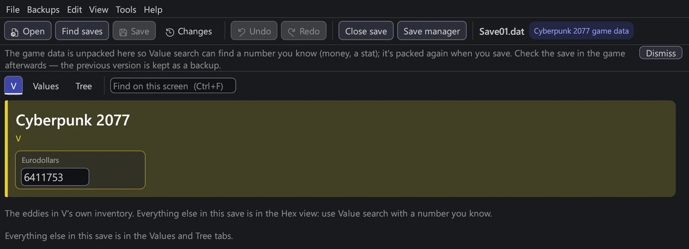

Cyberpunk 2077 Spielstand-Editor
Bearbeite deinen Cyberpunk 2077-Spielstand auf deinem eigenen PC mit Universal Save Editor, einem kostenlosen Offline-Spielstand-Editor und -Verwalter für 590+ (593) Spiele. Sichere, stelle wieder her und beginne neue Durchgänge im selben Fenster. Nichts wird hochgeladen, und es gibt keine Einschränkungen.
Version 0.9.3: Windows (64-bit) · Windows on ARM · Linux (64-bit) · Linux on ARM · macOS
Alle Versionen und Versionshinweise
Was du bearbeiten kannst
V: eurodollars, from V's own inventory (found through the save's section table; the table's position is updated when the save is repacked).
Der Editor zeigt diese Wertnamen auf Englisch an.

Wo Cyberpunk 2077 seine Spielstände ablegt
Ordner: %USERPROFILE%\Saved Games\CD Projekt Red\Cyberpunk 2077\<save name>
Dateien: sav.dat
Du musst ihn nicht selbst suchen: Wähle im Editor Spielstände meines Spiels finden, dann Cyberpunk 2077, und er listet die gefundenen Spielstände auf. (Die Browser-Version kann deine Ordner nicht durchsuchen: Öffne die Datei aus diesem Ordner selbst.)
So bearbeitest du deinen Cyberpunk 2077-Spielstand
- Lade Universal Save Editor herunter für Windows, macOS oder Linux und starte es einfach. Du willst nichts installieren? Nutze es stattdessen im Browser: Es läuft ebenfalls auf deinem Computer, und beim Speichern wird die bearbeitete Datei heruntergeladen (Chrome und Edge können in dieselbe Datei zurückschreiben).
- Schließe das Spiel, damit es deine Änderungen nicht überschreibt.
- Wähle Spielstände meines Spiels finden, dann Cyberpunk 2077, und öffne deinen Spielstand (oder ziehe die Spielstand-Datei auf das Fenster).
- Ändere, was du möchtest, und wähle dann Speichern. Der Editor prüft die neue Datei und sichert vorher die alte.
Fragen zu Spielständen von Cyberpunk 2077
Wo liegt der Spielstand von Cyberpunk 2077?
Meist in %USERPROFILE%\Saved Games\CD Projekt Red\Cyberpunk 2077\<save name>, in Dateien namens sav.dat. Der heruntergeladene Editor findet ihn für dich: Wähle Spielstände meines Spiels finden und dann Cyberpunk 2077.
Lädt Cyberpunk 2077 einen bearbeiteten Spielstand trotzdem?
Der Editor schreibt den Spielstand im selben Format zurück, das das Spiel verwendet, und liest die neue Datei zur Prüfung wieder ein, bevor etwas ersetzt wird. Das Original wird zuvor gesichert; sieht im Spiel etwas falsch aus, stellst du es unter Sicherungen wieder her.
Kann ich Spielstände von Cyberpunk 2077 auf dem Steam Deck oder unter Linux bearbeiten?
Ja. Es gibt eine Linux-Version, und Spielstände meines Spiels finden sucht auch in den Proton- und Wine-Präfixen, in denen Steam Play die Spielstände von Windows-Spielen ablegt.
Kann ich meinen Cyberpunk 2077-Spielstand im Browser bearbeiten?
Ja. Die Browser-Version läuft auf deinem eigenen Computer und lädt den Spielstand nie hoch. Öffne die Datei selbst und behalte eine Kopie, denn beim Speichern wird die bearbeitete Datei heruntergeladen, statt die alte zu sichern. In Chrome und Edge kann sie auch in dieselbe Datei zurückschreiben und behält zuvor das Original im Browser.
Ist die Nutzung beim Online-Spielen sicher?
Bearbeitete Spielstände sind für den Einzelspielermodus gedacht. Verwende sie nicht in Online- oder Mehrspielermodi, wo sie gegen Regeln verstoßen oder zur Markierung eines Kontos führen können.
Kostet es etwas?
Nein. Es ist kostenlos und bleibt es: keine Werbung, kein Konto, keine Einschränkungen. Der Code ist Open Source unter der GPL-3.0.
Hat es in deinem Spiel funktioniert?
Hast du eine Änderung in Cyberpunk 2077 ausprobiert? Sag uns, ob sie funktioniert hat. Das dauert eine Minute, und es wird kein Spielstand gesendet.
Warum ihn verwenden
- Dauerhaft kostenlos. Kein Preis, keine Werbung, kein Konto, keine Bezahlstufe.
- Offline. Dein Spielstand verlässt deinen Computer nie: Nichts wird hochgeladen, also gibt es keine Dateigrößenlimits, Warteschlangen oder Begrenzungen.
- Sicher. Jeder Spielstand wird vor dem Schreiben durch erneutes Einlesen geprüft, und die alte Datei wird zuerst gesichert (Sicherungen › Spielstand-Verwaltung öffnen).
- Funktioniert auch bei unbekannten Spielen. Die Wertsuche findet eine Zahl, die du kennst, oder eine, die du nicht kennst (eine Lebensanzeige, einen versteckten Zähler): suchen, spielen, speichern und dann behalten, was gestiegen, gesunken, anders oder gleich geblieben ist.
- Linux und Steam Deck. Spielstände meines Spiels finden sucht auch in Proton- und Wine-Präfixen, wo Windows-Spiele über Steam Play ihre Spielstände ablegen.
- In deiner Sprache. Menüs und Meldungen auf Englisch, Deutsch, Spanisch, Französisch, Italienisch, Polnisch, Türkisch, Russisch, brasilianischem Portugiesisch, Japanisch, Koreanisch, vereinfachtem und traditionellem Chinesisch, passend zur Systemsprache.
- Spielstand-Verwaltung (Schaltfläche in der Werkzeugleiste). Automatische und benannte Sicherungen in einem Ordner neben jedem Spielstand, wo kein Spiel sie lädt. Stelle jede Sicherung wieder her (der aktuelle Spielstand wird zuvor gesichert), vergleiche sie, oder sichere und beginne bei einem Spiel mit nur einem Spielstand ein neues Spiel und stelle den alten später wieder her. Jede Sicherung wird auf die Festplatte geschrieben und geprüft, bevor etwas ersetzt wird.
- Open Source. Jeder kann den Code lesen (GPL-3.0).
Bearbeitete Spielstände sind für den Einzelspielermodus gedacht. Verwende sie nicht in Online- oder Mehrspielermodi.
Weitere Spielstand-Editoren
- Fallout 4Spieloberfläche
- Dark Souls IIISpieloberfläche
- Sekiro: Shadows Die TwiceSpieloberfläche
- HadesSpieloberfläche
- Hollow KnightSpieloberfläche
- Terraria characterSpieloberfläche
Diese Seite auf Englisch · Alle 593 unterstützten Spiele ansehen (Englisch)